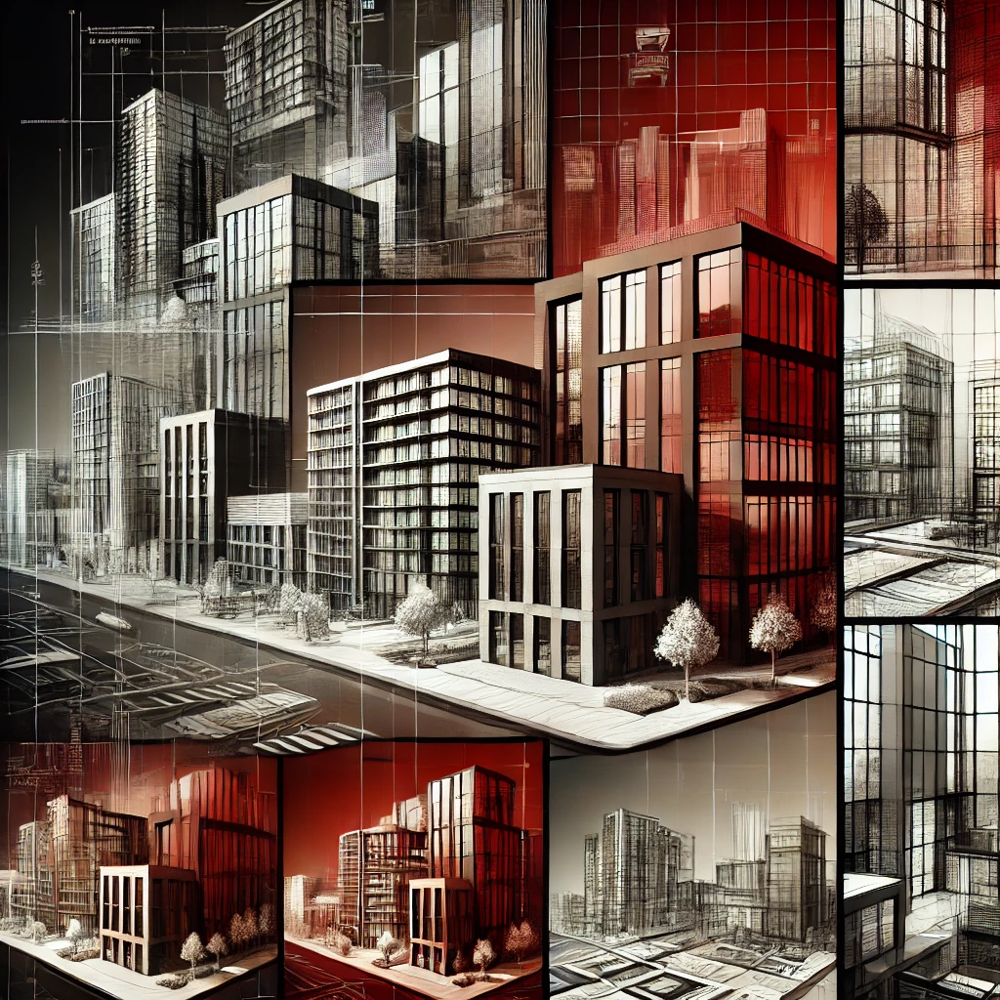

Our Mission
Build the best product that creates the most value for our customers, and use business to inspire and implement environmentally friendly solutions.
 Request a demo ↗
Request a demo ↗[ 01 ] - About ABIM Studio

ABIM Studio is a dynamic and innovative architectural and design firm specialising in Building Information Modeling, architectural planning, interior design and landscape services.
Our work is built around intelligent, efficient building models and a collaborative approach that improves coordination and execution.
Build the best product that creates the most value for our customers, and use business to inspire and implement environmentally friendly solutions.
We go above and beyond for our clients, no matter the challenge, and aim to deliver our very best work every day across our services.
From early planning to delivery, BIM helps every discipline see the same project clearly.
BIM stands for Building Information Modeling: a digital representation of the physical and functional characteristics of a project.
BIM improves collaboration, reduces costs and supports a more efficient project process.
It enables seamless communication and shared data among all project stakeholders.
Yes. BIM integrates well with traditional CAD systems and existing design information.
It reduces project costs by minimising errors and rework before they reach site.
BIM provides useful tools for effective project tracking and resource management.
Yes. BIM creates detailed 3D visualisations that support planning and execution.
BIM is widely used across architecture, construction and engineering industries.